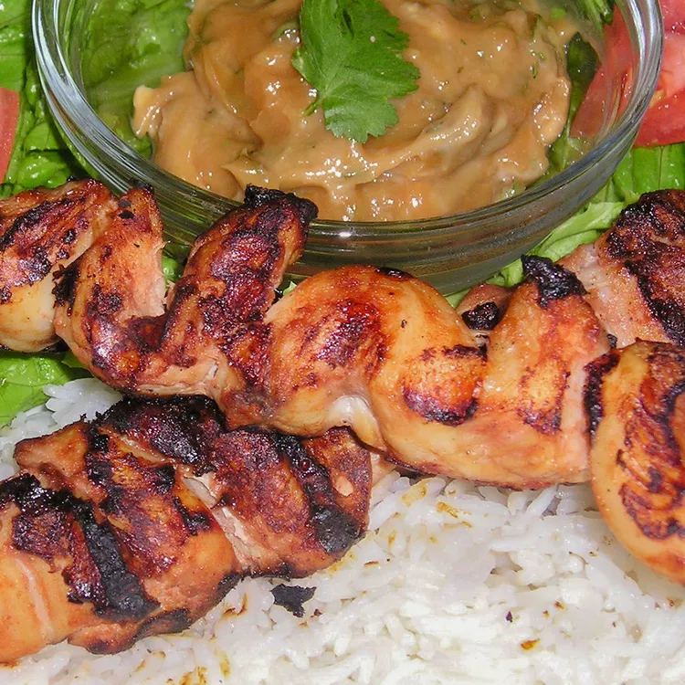

Indonesian Satay (Indonesian Satay)

Satay is a popular dish in Indonesia consisting of small pieces of meat, usually chicken,
lamb, or goat, skewered and grilled over charcoal. It is often served with a variety of
sauces, such as peanut sauce, kecap manis (sweet soy sauce), and sambal (chili sauce).
Ingredients
- 3 tablespoons soy sauce
- 3 tablespoons tomato sauce
- 1 tablespoon peanut oil
- 2 cloves garlic, peeled and minced
- 1 pinch ground black pepper
- 1 pinch ground cumin
- 6 skinless, boneless chicken breast halves - cubed
- 1 tablespoon vegetable oil
- ¼ cup minced onion
- 1 clove garlic, peeled and minced
- 1 cup water
- ½ cup chunky peanut butter
- 2 tablespoons soy sauce
- 2 tablespoons white sugar
- 1 tablespoon lemon juice
- skewers
Directions
-
Step 1
In a bowl, mix soy sauce, tomato sauce, peanut oil, garlic, black pepper, and cumin. Place
chicken into the mixture, and stir to coat. Cover, and marinate in the refrigerator for at
least 15 minutes, but not overnight. This will make the meat too dark.
-
Step 2
Preheat the grill for high heat.
-
Step 3
Heat vegetable oil in a saucepan over medium heat, and saute onion and garlic until lightly
browned. Mix in water, peanut butter, soy sauce, and sugar. Cook and stir until well
blended. Remove from heat, mix in lemon juice, and set aside.
-
Step 4
Lightly oil the grill grate. Thread chicken onto skewers, and discard marinade. Grill
skewers about 5 minutes per side, until chicken juices run clear. Serve with the peanut
sauce.